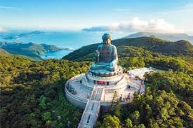
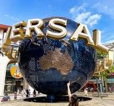
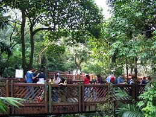
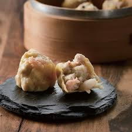
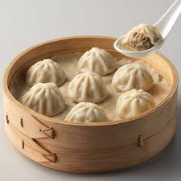
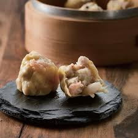
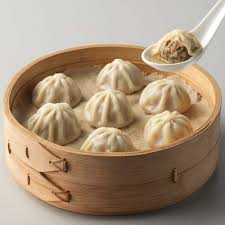

The Melting Pot of Hong Kong
discover the vibrant culture and stunning landscapes of this unique city.
Overview
Hong Kong is a vibrant city known for its stunning skyline, bustling markets, and rich cultural heritage. It offers a unique blend of Eastern and Western influences, making it a fascinating destination for travelers. From the iconic Victoria Harbour to the bustling streets of Mong Kok, Hong Kong has something for everyone. Visitors can explore traditional temples, indulge in world-class cuisine, and shop for everything from luxury goods to local crafts. With its efficient public transportation system and friendly locals, Hong Kong is an easy city to navigate and explore.
historical heritage
Hong Kong boasts a variety of historical heritage sites. Notably, the Man Mo Temple, built in 1847, is one of the oldest Taoist temples in Hong Kong. Remnants of 19th-century British colonial architecture and landmarks are scattered throughout the city, creating a unique blend of Eastern and Western cultures. At the Hong Kong Museum of History, visitors can explore the city’s past from ancient times to the present day.
more infogeographical features
Hong Kong is located on the southeastern coast of China and is known for its stunning geographical features. The city is made up of a peninsula and several islands, with a total area of approximately 1,104 square kilometers. Hong Kong is characterized by its hilly terrain, with numerous mountains and hills that provide breathtaking views of the city and its surroundings. The coastline is dotted with beautiful beaches, bays, and harbors, making it a popular destination for water sports and outdoor activities. Additionally, Hong Kong has several country parks and nature reserves that offer opportunities for hiking, birdwatching, and exploring the region's diverse flora and fauna.
check hongkong weatherMust-Visit Attractions
tian tan budda statue
location link
The Tian Tan Buddha, also known as the Big Buddha, is a large bronze statue of Buddha Shakyamuni located at Ngong Ping, Lantau Island, in Hong Kong. It is one of the most popular tourist attractions in Hong Kong and a significant symbol of Buddhism in the region. The statue was completed in 1993 and stands at 34 meters (112 feet) tall, making it one of the largest seated Buddha statues in the world. Visitors can reach the statue by climbing a long flight of stairs or by taking a cable car ride that offers stunning views of the surrounding landscape.
hongkong universal studio
location link
Hong Kong Disneyland is a theme park located on Lantau Island in Hong Kong. It is the first Disney park to open in China and features a variety of attractions, shows, and entertainment options based on Disney characters and stories. The park is divided into several themed areas, including Adventureland, Fantasyland, and Tomorrowland, and offers experiences for visitors of all ages. Since its opening in 2005, Hong Kong Disneyland has become a popular destination for both locals and tourists.
Edward Youde Aviary
location link
The Edward Youde Aviary is a large aviary located in Hong Kong Park. It is home to a variety of bird species from around the world and features a walk-through design that allows visitors to experience the birds up close. The aviary is set in a lush, tropical environment and includes waterfalls, streams, and a variety of plants to create a natural habitat for the birds. It is a popular attraction for both locals and tourists, offering a peaceful escape from the city.
| Attraction | Category | Description |
|---|---|---|
| Tian Tan Buddha Statue | Landmark |
Dominating the lush, mountainous landscape of Ngong Ping on Lantau Island, the Tian Tan Buddha, colloquially known as the "Big Buddha," is a majestic bronze statue of Buddha Shakyamuni. Completed in 1993, this awe-inspiring monument stands 34 meters (112 ft) tall and weighs over 250 metric tons, making it one of the largest outdoor seated Buddha statues in the world. The statue rests atop a lotus throne on a three-tiered platform modeled after the Altar of Heaven in Beijing. Visitors must ascend 268 steps to reach its base, symbolizing the path to enlightenment. The Buddha's right hand is raised to remove affliction, while his left hand rests on his lap in a gesture of generosity, offering a serene blessing over the entire island. As a major pilgrimage site and an extension of the nearby Po Lin Monastery, the statue symbolizes the harmonious relationship between man and nature, as well as the stability and prosperity of Hong Kong.
|
| Hong Kong Disneyland | Theme Park | A theme park featuring attractions and entertainment based on Disney characters and stories. |
| Edward Youde Aviary | Park | A large aviary in Hong Kong Park, home to a variety of bird species from around the world. |
- Dim Sum
- Egg Tarts
- Wonton Noodles
- Milk Tea
- Roast Goose⭐
 



Dim Sum is a traditional Cantonese cuisine that consists of small, bite-sized portions of food served in steamer baskets or on small plates.
Egg Tarts are a popular dessert in Hong Kong, featuring a flaky pastry crust filled with creamy egg custard.
Wonton Noodles are a classic Hong Kong dish consisting of thin egg noodles served in a flavorful broth with wontons (dumplings) filled with shrimp or pork.

Hong Kong-style Milk Tea is a popular beverage made with black tea and evaporated or condensed milk, resulting in a rich and creamy flavor.
Roast Goose is a traditional Cantonese dish that features a whole goose marinated with a blend of spices and roasted to perfection, resulting in crispy skin and tender meat.
Fun Facts & Travel Tips
↦ Hong Kong is a vibrant city with a rich cultural heritage and a unique blend of Eastern and Western influences. Here are some fun facts and travel tips to enhance your visit
- Language: While Cantonese is the primary language spoken, English is widely understood, especially in tourist areas.🚀
- Transportation: 🚇 The MTR (Mass Transit Railway) is the most efficient way to get around the city. Consider getting an Octopus card for convenient travel.
- Currency: 💵 The local currency is the Hong Kong Dollar (HKD). Credit cards are widely accepted, but it's a good idea to carry some cash for small purchases.
- Weather: Hong Kong has a ▸subtropical climate◂. The best time to visit is during the fall (September to November) when the weather is mild and pleasant.